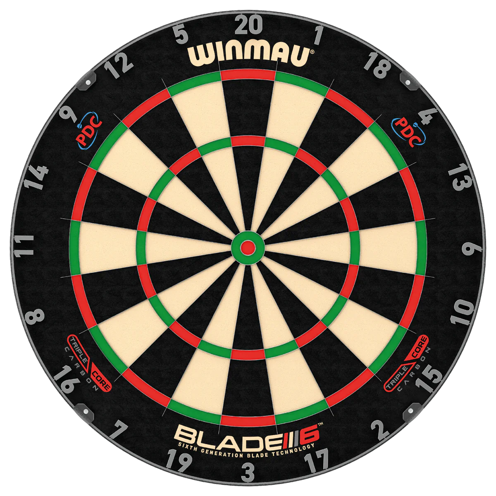

|  | A DARTS története |
 |
A legenda szerint néhány száz évvel ezelőtt egy átfázott angol íjász elhatározta, hogy kellemesebb módot választ a gyakorlásra a téli hónapokban. Letette íját, levágott a nyílvesszőjéből, és elvonult a közeli pub kellemes melegébe és kényelmébe, ahol ügyességét úgy gyakorolta, hogy a lerövidített nyílvesszőket a falra akasztott farönkszeletbe dobta. Mellé állt egy másik íjász, aki megpróbált az előzőnél jobb eredményt elérni, és ezzel megszületett a vetélkedés, a játék, a sport.
Az első írásos feljegyzések között szerepel, hogy az azincourt-i csata idején 1415-ben az angol íjászok, valamint 1620-ban az első angol kivándorlók az Újvilág felé hajózva a Mayflower fedélzetén a DARTS valamely formáját játszották. !! A kezdeti időszakban a sport a brit civilizációval érintett területeken terjedt el. A ma érvényes szabályzatok alapját képező versenyszisztémát első alkalommal - mint annyi más sportnál - Nagy-Britanniában dolgozták ki a XIX. század végén, és akkor alakultak az első szervezetek és klubok is. Az első brit nemzeti szövetség 1924-ben jött létre. Mivel előtte sokan szerencsejátéknak tartották, ez a szervezet fogalmazta meg először, hogy DARTS sport egy olcsó, tiszta, ügyességi játék. 1928-tól egészen az ötvenes évekig a legjelentősebb DARTS verseny a Londoni Sunday által szponzorált News of World volt.
A sport fejlődése a hatvanas évek végén, a hetvenes évek elején jelentősen felgyorsult; izgalmas, népszerű sporttá fejlődött. A szinte robbanásszerű fejlődésben - a sport alapvető tulajdonságából eredő népszerűségen kívül - két tényező játszott fontos szerepet. Az egyik a technikai fejlődés: a felszerelések gyártói képesek lettek a nyilakat wolfram ötvözetből készíteni, ami elősegítette az eredmények jelentős javulását. A másik, talán az első tényezőnél fontosabb: 1973-ban Oliver A. Croft vezetésével alakult brit nemzeti szövetség a British Darts Organization (BDO) a televízió nyilvánossága elé vihette a DARTS sportot.
Nagy-Britannia területén jelenleg már több, mint 6,5 millió játékos versenyez rendszeresen. A Világ Darts Szövetségnek ma már 52 tagja van.
A DARTS sport népszerűsödésének újabb hatalmas lökést adott a játék gépesített változata, az úgynevezett soft darts játék. Itt a játék lényege nem változott, viszont a verseny menete leegyszerűsödött, hisz a játék levezetését a gép saját maga végzi el, látványosabbá és szórakoztatóbbá téve ezzel a játékot. Mára a világon számos cég gyárt soft gépet. Ennek köszönhetően látványos, nagy érdeklődést keltő nemzetközi versenyek kerülnek megrendezésre, amelyek a média sport közvetítéseiben előkelő helyen szerepelnek. Ezáltal egyre több ember kap állandó információt a darts játékról, és kedvet ahhoz, hogy maga is elkezdjen játszani.
A darts játék egyre nagyobb ismertségének köszönhető, hogy 2001-ben az angol parlament hivatalosan is sporttá nyilvánította. Ezzel egyidőben megtörtént a darts olimpiai szakszövetségek közé történő felvételének kérelme.